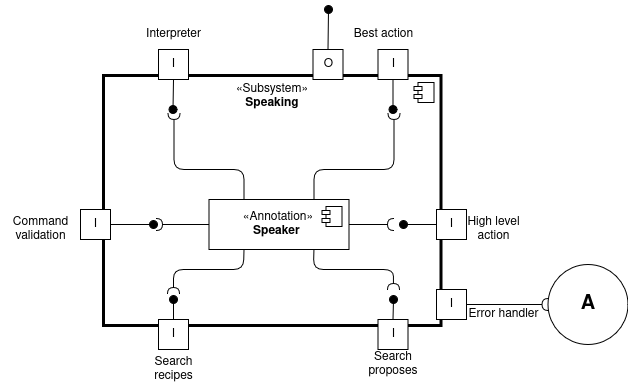

Speaker
The speaker component manages verbal communication between the robot and nearby people through speakers. It receives messages from the various connected components and vocally reproduces them using its internal module.
As we can observe, there are two ports that are not connected to any internal component, as these serve as the input and output for the error handler component, which will manage any recovery procedures.
Implementation through patterns
The speaker component must be implemented using the singleton pattern since the robot has only one audio output device. Multiple instances of the speaker class would create conflicts in accessing the shared hardware resource, as different system components might attempt to use the single physical speaker simultaneously.